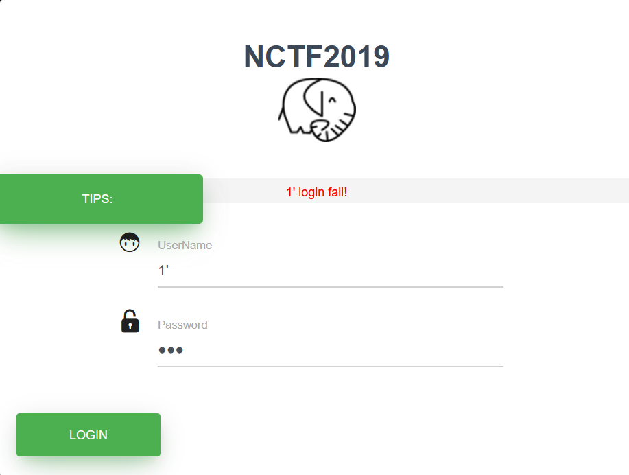

BUUCTF-Web-[NCTF2019]Fake XML cookbook
本文为记录个人信安小白的刷题路程，大佬勿喷，也同时希望文章能对您有所帮助
打开靶机，发现一个登录页面，尝试sql注入，

没有返回sql报错，不是sql注入漏洞，F12查看源码没有发现有用信息，
Burp抓包看看，
发现是xml语言传输数据，那就是xxe漏洞了，
构造payload：
1 |
|
获得flag
XML
XML（可扩展标记语言，eXtensible Markup Language）是一种用于存储和传输数据的标记语言。它被设计为具有自我描述性、可读性强且易于机器解析。
基本概念
标记语言：通过标签（<标签>内容</标签>）定义数据的结构和含义。
可扩展：用户可自定义标签（如<book>、<price>），不像HTML有固定标签集。
纯文本格式：跨平台兼容，支持多种编码（如UTF-8）。
核心特点
结构化数据：以树形层级结构组织数据。
1 | <book> |
自描述性：标签名通常直接反映数据含义。
基本语法基础
必须有根元素：所有内容包含在一个根标签内。
1 | <catalog> <!-- 根元素 --> |
标签区分大小写：<Book>和<book>不同。
属性值需引号：<book id="1">。
XXE漏洞（这里只讲解这题需要的知识）
XML允许通过文档类型定义（DTD）声明实体（Entity），包括：
内部实体：定义在XML文档内部，如<!ENTITY name "value">。
外部实体：引用外部资源（文件、URL等），如 <!ENTITY ext SYSTEM "file:///etc/passwd">。
攻击者通过构造恶意XML，利用外部实体读取服务器文件或发起网络请求。
XML DTD（文档类型定义）
DTD（Document Type Definition）是XML的早期模式定义语言，用于规定XML文档的结构和内容约束。
DTD可以内嵌在XML中（内部DTD），或通过外部文件引用（外部DTD）。
内部DTD示例
1 |
|
<!ELEMENT> 定义元素及其子元素。<!ENTITY> 定义实体，此处 &company; 会被替换为 ABC Corp。
实体（Entity）类型
实体（Entity）是DTD的核心功能之一，它允许定义可重用的数据单元，但也正是XXE漏洞的根源。
实体分为一般实体和参数实体，每种又可分为内部实体和外部实体。
一般实体（General Entity）
用途：在XML文档内容中引用。
语法：<!ENTITY 实体名 "实体值">。
1.内部一般实体
1 |
使用时：<book>&author;</book> → 解析为 <book>John Doe</book>。
2.外部一般实体
通过SYSTEM关键字引用外部资源：
1 |
使用时：<data>&ext;</data> → 可能泄露文件内容（XXE漏洞根源）。
基础XXE（读取本地文件）
1 |
|